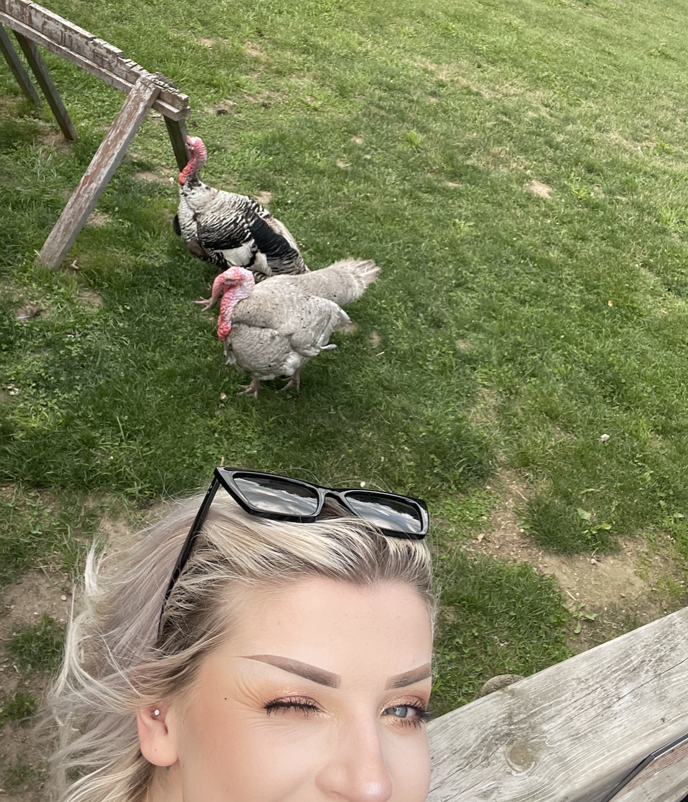

About Flight Patterns
A cinematic, data-driven experience tracing the Arctic Tern's epic pole-to-pole journey.
We blend satellite data, animation, and immersive storytelling to highlight the urgency of polar conservation.
Our Mission: From Data to Narrative
The Arctic Tern undertakes the longest annual migration of any animal on Earth—a feat of navigation connecting the Arctic and Antarctic. Our mission is to translate complex satellite tracking data into an accessible, cinematic narrative that inspires global stewardship of migratory species and the vital ocean habitats they rely on.
Why the Arctic Tern?
The Tern’s annual journey (over 70,000 km) makes it a critical indicator of climate change and ocean health in both polar regions.
Cinematic Storytelling
We use scroll-triggered animation and parallax effects to create a deep sense of distance and motion, allowing the user to literally follow the flight path.
Data Visualization
The flight patterns are based on real tracking data from satellite tags, ensuring scientific accuracy underlies the visual experience.
By experiencing the scale of this migration, we hope to foster a greater appreciation for the fragility of the Earth's polar and ocean ecosystems, linking distant habitats through the story of one incredible bird.
Key Migration Facts
- Breeding: Arctic tundra (Iceland, Greenland, Canada) — June to August
- Departure: North Atlantic routes starting in late August
- Crossing: Mid-Atlantic open ocean flights, often covering several thousand kilometers nonstop
- Feeding: Antarctic waters (Weddell Sea and Southern Ocean) with intense productivity during the southern summer
- Annual distance: Typically over 70,000 km round trip, giving the tern the most summer daylight of any animal
Meet the Team
A multidisciplinary team dedicated to blending science, design, and web technology.
-

Emmaline leads the visual storytelling and UX, blending photography and scroll-based motion to bring the migration data to life.
-
Jeremy is responsible for the performance optimization, building the custom bird flight path logic, and ensuring cross-browser compatibility.
Get Involved in Conservation
Support Arctic Tern research and global marine conservation efforts, or contact us for collaborations.